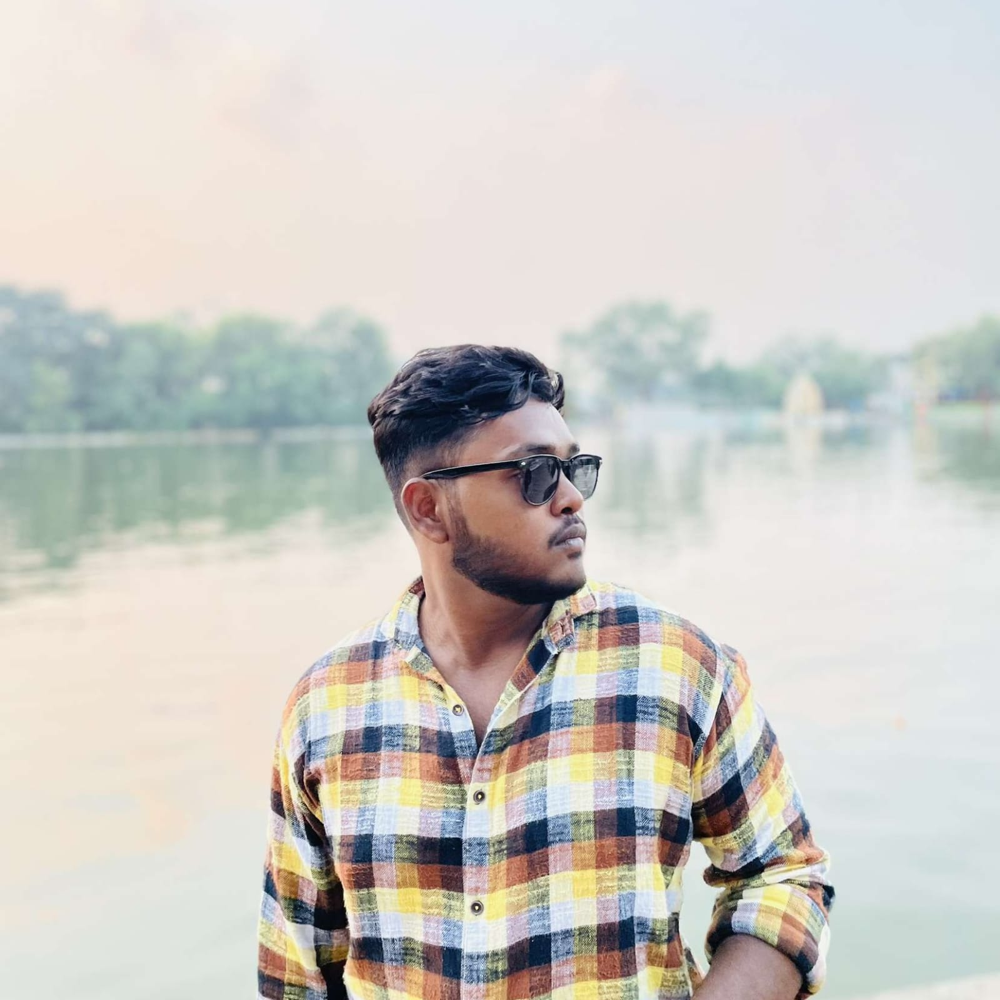

ADITYA DAS
THIS IS MY RESUME

EDUCATION
Bachelor of Computer Application(Honors)
- University name Pt. Ravishankar Shukla University.
- College name Maharaja Agarsen International College.
- First year marks obtained 77.8
Senior Secondary Examination, Humanities (07/2021)
- Mary's School - Dwarka, New Delhi Subjects: History, Political Science, English, Geography and Physical Education
- 78.2% overall marks obtained.
LANGUAGES & PROFICIENCY
English:Proficient, Hindi:Proficient, Bengali: Native language
SKILLS
- Languages : Java, .NET, PHP
- Operating Systems : Windows XP, Linux, MS-DOS
- Packages : Microsoft Office
- RDBMS : Oracle, MS-SQL server
- Confident, Team Player, Good Listener, Fast learner
ACHIVEMENTS
Participated in National Level Seminar
Participated in software program in the Intra-college competition
HOBBIES
- Web development
- Internet surfing
- Sports
- Chess